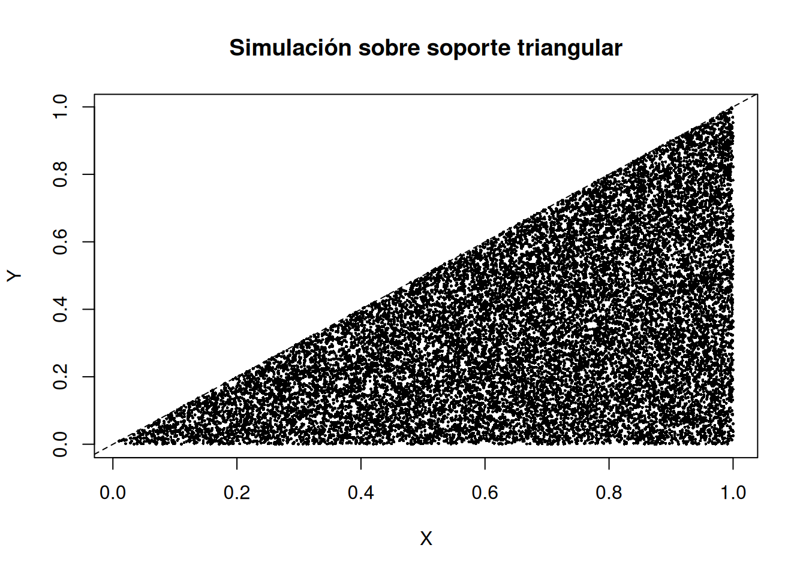
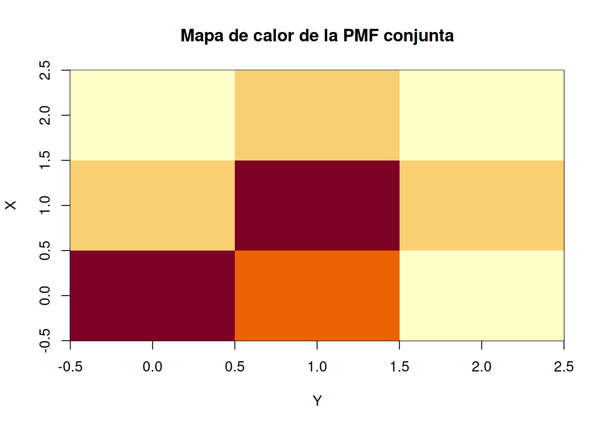

15Variables aleatorias conjuntas, distribuciones marginales y condicionales
15.1 Objetivos de aprendizaje
Al finalizar este capítulo, el estudiante será capaz de:
describir simultáneamente dos variables aleatorias mediante una distribución conjunta;
construir e interpretar tablas de probabilidad conjunta para variables discretas;
obtener distribuciones marginales a partir de una distribución conjunta;
calcular distribuciones condicionales;
trabajar con densidades conjuntas continuas mediante integrales dobles;
identificar correctamente la región de soporte de una densidad bidimensional;
obtener densidades marginales y condicionales;
verificar independencia mediante la factorización de la distribución conjunta;
utilizar R para organizar tablas conjuntas, calcular probabilidades y realizar simulaciones;
interpretar visualmente dependencia e independencia mediante mapas de calor y regiones en el plano.
15.2 De una variable a dos variables
Hasta ahora hemos estudiado una variable aleatoria a la vez. Sin embargo, muchos problemas de ingeniería y ciencias requieren observar dos magnitudes simultáneamente.
Ejemplos:
temperatura y humedad;
tiempo de respuesta y número de solicitudes;
diámetro y longitud de una pieza;
concentración de dos contaminantes;
número de fallas de dos subsistemas;
voltaje de entrada y voltaje de salida.
Si \(X\) y \(Y\) se observan en el mismo experimento, la distribución conjunta permite estudiar no sólo cada variable por separado, sino también la forma en que se relacionan.
15.3 Variables aleatorias conjuntas discretas
Si \(X\) y \(Y\) son discretas, definimos la función de masa conjunta por
\[
\boxed{p_{X,Y}(x,y)=P(X=x,Y=y)}.
\]
Debe satisfacer
\[
p_{X,Y}(x,y)\ge0
\]
y
\[
\boxed{\sum_x\sum_y p_{X,Y}(x,y)=1}.
\]
15.4 Ejemplo: dos subsistemas
Supongamos que \(X\) es el número de fallas observadas en un subsistema A y \(Y\) el número de fallas de un subsistema B durante un intervalo. La distribución conjunta es
\(X\backslash Y\)
0
1
2
Total
0
0.20
0.10
0.05
0.35
1
0.15
0.20
0.10
0.45
2
0.05
0.10
0.05
0.20
Total
0.40
0.40
0.20
1.00
Cada celda representa una probabilidad conjunta. Por ejemplo,
Si \(X\) y \(Y\) tienen densidades, son independientes cuando
\[
\boxed{
f_{X,Y}(x,y)=f_X(x)f_Y(y)
}
\]
para todos los puntos relevantes, salvo posibles excepciones de área cero.
En el ejemplo triangular,
\[
f_X(x)f_Y(y)=4x(1-y),
\]
que no coincide con la densidad conjunta constante \(2\). Además, el soporte triangular no es un rectángulo producto. Por tanto, las variables son dependientes.
15.20 Ejemplo continuo independiente
Sea
\[
X\sim U(0,1),\qquad Y\sim U(0,2),
\]
independientes. Entonces
\[
f_X(x)=1,\qquad0<x<1,
\]
\[
f_Y(y)=\frac12,\qquad0<y<2,
\]
y
\[
\boxed{f_{X,Y}(x,y)=\frac12}
\]
sobre el rectángulo
\[
0<x<1,\qquad0<y<2.
\]
La región de soporte sí es producto de los soportes marginales.
15.21 Cálculos bidimensionales en R
Para el ejemplo triangular podemos definir
fxy <-function(x, y) {ifelse(x >0& x <1& y >0& y < x, 2, 0)}fx <-function(x) ifelse(x >0& x <1, 2*x, 0)fy <-function(y) ifelse(y >0& y <1, 2*(1-y), 0)
La probabilidad de la subregión anterior puede calcularse mediante integración iterada:
Las frecuencias empíricas deben acercarse a la distribución conjunta y a sus marginales.
15.23 Simulación del ejemplo triangular
Una manera eficiente de simular la densidad
\[
f_{X,Y}(x,y)=2,\qquad0<y<x<1,
\]
es aprovechar sus marginales y condicionales.
Como
\[
f_X(x)=2x,
\]
la CDF marginal es
\[
F_X(x)=x^2,
\]
y por transformada inversa
\[
X=\sqrt{U_1},\qquad U_1\sim U(0,1).
\]
Dado \(X=x\), \(Y\mid X=x\sim U(0,x)\), así que
\[
Y=XU_2,
\]
con \(U_2\sim U(0,1)\) independiente de \(U_1\).
set.seed(2026)n <-20000u1 <-runif(n)u2 <-runif(n)X <-sqrt(u1)Y <- X * u2plot(X, Y, pch =16, cex =0.35,xlab ="X", ylab ="Y",main ="Simulación sobre soporte triangular")abline(0, 1, lty =2)

15.24 Visualización mediante mapa de calor
Para una distribución discreta conjunta, un mapa de calor permite identificar rápidamente dónde se concentra la probabilidad.
image(x =0:2, y =0:2, z = P,xlab ="Y", ylab ="X",main ="Mapa de calor de la PMF conjunta")

Un patrón concentrado cerca de una diagonal puede indicar asociación, mientras que una tabla que factoriza como producto de marginales representa independencia.
15.25 Interactivo del capítulo
El interactivo del capítulo utiliza una tabla conjunta \(3\times3\) con marginales fijas. Un deslizador modifica un parámetro de asociación sin cambiar dichas marginales.
El estudiante puede observar simultáneamente:
la PMF conjunta como mapa de calor;
las marginales de \(X\) y \(Y\);
una distribución condicional seleccionada;
la tabla que correspondería a independencia, \(p_X(x)p_Y(y)\);
la diferencia entre la distribución real y la independiente;
un indicador numérico de separación respecto de la independencia.
Esto permite ver una idea crucial: dos distribuciones pueden tener exactamente las mismas marginales y, sin embargo, estructuras conjuntas muy distintas.
15.26 Actividad con GeoGebra
15.27 Parte A: soporte continuo
Dibuja el cuadrado unitario y la región
\[
0<y<x<1.
\]
Utiliza un deslizador \(c\in(0,1)\) y representa la recta vertical \(x=c\). La sección vertical de la región tiene longitud \(c\), por lo que
\[
f_X(c)=2c.
\]
Después usa una recta horizontal \(y=d\). La sección horizontal tiene longitud \(1-d\), de modo que
\[
f_Y(d)=2(1-d).
\]
Esta construcción ofrece una interpretación geométrica directa de la marginalización.
15.28 Parte B: condicionamiento
Fija \(X=c\). El segmento posible para \(Y\) es
\[
0<Y<c.
\]
Observa que la densidad condicional sobre ese segmento es uniforme:
\[
f_{Y\mid X}(y\mid c)=\frac1c.
\]
15.29 Estrategia de resolución
Ante un problema con dos variables:
identifica si la distribución conjunta es discreta o continua;
determina con cuidado el soporte conjunto;
verifica normalización;
para marginalizar, suma o integra sobre la otra variable;
para condicionar, divide la conjunta entre la marginal correspondiente;
para independencia, compara la conjunta con el producto de marginales;
en el caso continuo, dibuja primero la región de integración;
interpreta el resultado: marginalizar elimina información sobre una variable; condicionar incorpora información sobre ella.
15.30 Errores frecuentes
Confundir una probabilidad conjunta con una probabilidad condicional.
Obtener marginales dividiendo en lugar de sumar o integrar.
Olvidar normalizar una distribución condicional.
Integrar sobre un rectángulo cuando el soporte real es triangular u otra región.
Concluir independencia sólo porque las marginales parecen sencillas.
Creer que conocer las dos marginales determina la distribución conjunta.
En variables continuas, interpretar \(f_{X,Y}(x,y)\) como una probabilidad puntual.
Visualizar dependencia, marginales y distribuciones condicionales.
Presentación
PDF / PPT
Próximamente
Se incorporará cuando se proporcionen los enlaces.
Video
Video
Próximamente
Explicación audiovisual complementaria.
Infografía
Imagen / PDF
Próximamente
Síntesis visual de distribución conjunta, marginalización y condicionamiento.
15.34 Referencias del capítulo
El tratamiento de distribuciones conjuntas, marginales, condicionales e independencia sigue la presentación estándar de Walpole et al. (2012), Devore (2016), Montgomery y Runger (2018) y Johnson (2018). Los ejemplos, ejercicios, simulaciones y código en R son originales; el enfoque computacional general toma como referencia Kerns (2010).
Devore, Jay L. 2016. Probability and Statistics for Engineering and the Sciences. 9.ª ed. Cengage Learning.
Johnson, Richard A. 2018. Miller & Freund’s Probability and Statistics for Engineers. 9.ª ed. Pearson.
Kerns, G. Jay. 2010. Introduction to Probability and Statistics Using R. 1.ª ed.
Montgomery, Douglas C., y George C. Runger. 2018. Applied Statistics and Probability for Engineers. 7.ª ed. Wiley.
Walpole, Ronald E., Raymond H. Myers, Sharon L. Myers, y Keying Ye. 2012. Probabilidad y estadística para ingeniería y ciencias. 9.ª ed. Pearson.